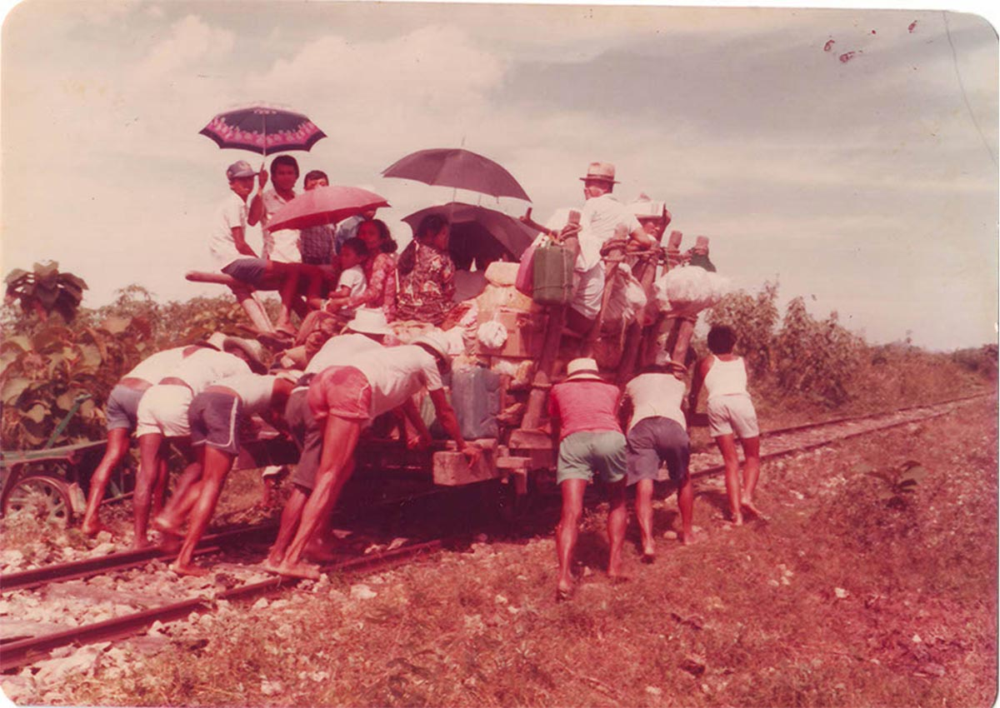

Tema & Jadwal Presentasi karya
JIPFest 2022 menampilkan lima sesi Artist Talk, semuanya digelar pada akhir pekan di Teater Bulungan. Mulai tahun ini, demi mendukung keberlangsungan festival, JIPFest memberlakukan sistem tiket berbayar untuk beberapa talk show. sesi ini disampaikan dalam bahasa indonesia.

Family to Nation oleh Arif Furqan
Memanfaatkan arsip domestik keluarga Indonesia, Family to Nation menghidupkan narasi pinggiran dari sebuah bangsa. Proyek kuratorial ini mensimulasikan ruang untuk mengakses dokumentasi yang dianggap “minor,” sekaligus membuka kesempatan kepada generasi saat ini untuk mengkaji ulang narasi (kesejarahan) versi rakyat biasa.
Arif Furqan
Arif adalah seorang pengajar, peneliti, dan fotografer. Dia adalah eksponen Flock Project, kolektif yang mengeksplorasi kemungkinan medium cetak fotografi. Pada 2021 Arif menerima Prince Clauss Seed Award untuk proyek Unhistoried, sebuah proyek berbasis arsip foto keluarga Indonesia.
The Queen Unleashed oleh Meidiana Tahir
The Queen Unleashed mengisahkan Dania, seorang transpuan yang melewati lingkungan sarat siksaan emosional, hingga akhirnya berhasil bangkit menjadi sosok yang bangga dengan diri sendiri.
Meidiana Tahir
Meidiana, fotografer asal Jakarta, berusaha menghadirkan narasi visual menarik melalui perspektifnya yang jujur dan unik. Dibekali oleh latar akademis di bidang politik dan hasrat tak terbatas untuk fotografi, dia menggunakan nilai tersebut sebagai media katarsis dalam mengekspresikan pikirannya yang rumit dan bising.
©Copyright 2022-Farhan Ramadhani  Instagram: @danibos_granat
Instagram: @danibos_granat